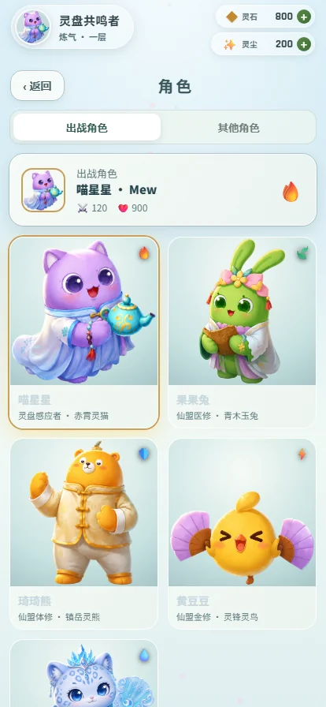

仙侠世界 · 三消玩法原型
把三消做成一场回合对战。双方轮流使用同一块棋盘，消除产生攻击或护盾，战斗之外则通过地图探索、灵兽配队和宗门推进冒险。
 放大查看 ↗
放大查看 ↗对手也会用你的棋盘
交换相邻灵印，连成三枚或更多就会消除。棋盘由双方共享，所以这一步既要看自己能打出什么，也要看结算后给对手留下了什么。遇到 Boss 时，攻击、护盾和功法释放的时机都影响下一回合。
 放大查看 ↗
放大查看 ↗ 放大查看 ↗
放大查看 ↗在地图里找下一场冒险
从等距地图出发，走近未探索区域才会揭开云雾，看到城镇、驿站或遗迹。城镇内可以补给，阵容界面用来选择出战灵兽，宗门驻地则连接功法传承与建设。
 放大查看 ↗
放大查看 ↗
放大查看 ↗ 放大查看 ↗
放大查看 ↗